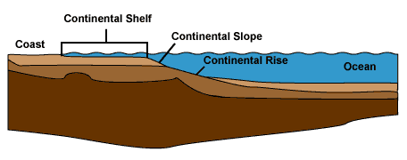
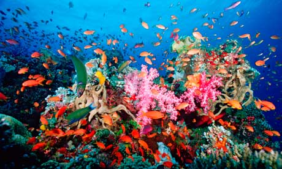
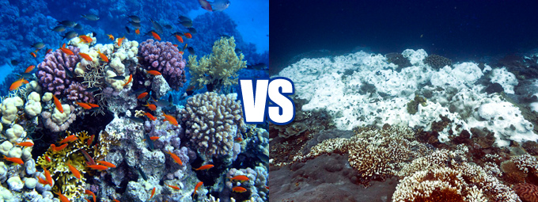

Tropical Oceans
Glossary of Terms
Glossary
Continental Shelf
The continental shelf is the extended perimeter of each continent and associated coastal plain. Much of the shelf was exposed during glacial periods, but is now submerged under relatively shallow seas (known as shelf seas) and gulfs, and was similarly submerged during other interglacial periods.

Coral Reef
Coral reefs are underwater structures made from calcium carbonate secreted by corals. Coral reefs are colonies of tiny living animals found in marine waters that contain few nutrients. Most coral reefs are built from stony corals, which in turn consist of polyps that cluster in groups. Coral polyps secrete hard carbonate exoskeletons which support and protect their bodies. Reefs grow best in warm, shallow, clear, sunny and agitated waters.

Zooxanthellae
Most reef-building corals contain photosynthetic algae, called zooxanthellae, that live in their tissues. The corals and algae have a mutualistic relationship. The coral provides the algae with a protected environment and compounds they need for photosynthesis. In return, the algae produce oxygen and help the coral to remove wastes. Most importantly, zooxanthellae supply the coral with glucose, glycerol, and amino acids, which are the products of photosynthesis. The coral uses these products to make proteins, fats, and carbohydrates, and produce calcium carbonate
